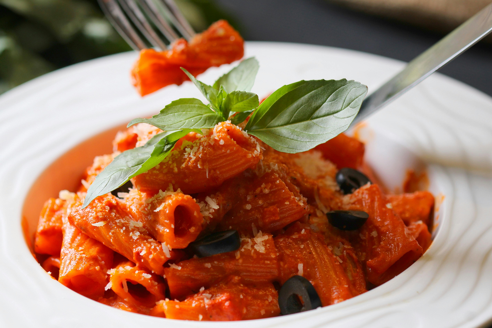

Tomato Blast

Ingredienten
- Pasta
- Olive oil
- Garlic (minced or thinly sliced)
- Tomatoes (fresh or canned, for the sauce)
- Parmesan cheese (grated, for topping)
- 50g Parmesan cheese (grated)
- 150g fresh mozzarella (torn into pieces)
Steps
- Toss Pasta with Pesto:
In a large bowl, toss the cooked pasta with the freshly made pesto.
If the sauce is too thick, add a spoonful of the reserved pasta water to loosen it up.
- Prepare the Pesto:
In a food processor or blender, combine the basil leaves, pine nuts, garlic, and Parmesan cheese.
Pulse until finely chopped.
Slowly add the olive oil while blending until you reach a smooth, thick consistency.
Season with salt and pepper to taste.
S
- Make the Sauce:
Add diced tomatoes to the pan with the garlic. Stir and cook for 5-7 minutes until the tomatoes break down into a sauce.
Season with salt, pepper, and chili flakes (optional).
If the sauce is too thick, add a little of the reserved pasta water to loosen it.
- Combine Pasta and Sauce:
Add the drained pasta to the pan with the sauce.
Toss everything together to coat the pasta with the sauce evenly. Cook for another 1-2 minutes.
- Serve:
Transfer the pasta to plates and sprinkle generously with grated Parmesan cheese.
Garnish with fresh basil, if desired.
Enjoy your homemade pasta dish!